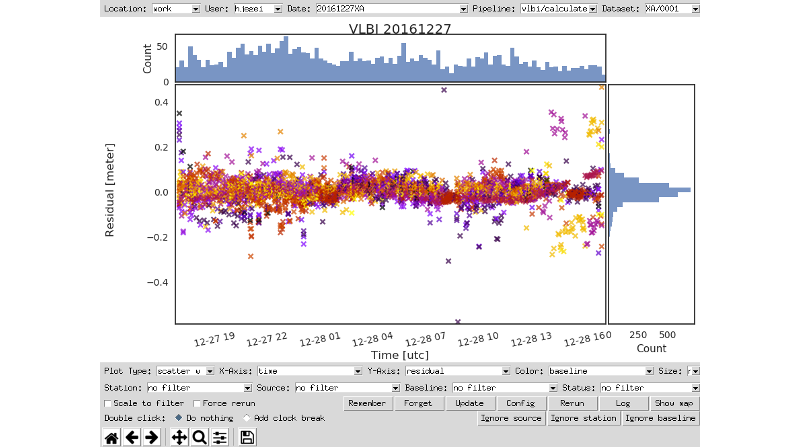

There is a companion tool to Where, and is installed as part of the Where software package.
What can There do?
There is of course the answer to the question Where? As such There - the software program - is used to interactively explore the results of a Where analysis.
The result of a Where analysis is a dataset which contains timeseries of all relevant variables in the analysis. A normal use of There is to plot timeseries of residuals or estimation parameters, as is seen in the following screenshot:

Figure: A timeseries plotted in There showing the pre-fit residuals after analyzing the VLBI XA-session on December 27 2016
However, There also has more advanced capabilities including:
-
Plotting related timeseries like for instance x, y and z-site coordinates side-by-side or as a 3-dimensional plot
-
Comparing timeseries
-
Filtering timeseries to investigate given stations, radio sources and baselines
There also supports your analysis workflow, by letting you
-
Identify and add clock breaks to an analysis
-
Update the configuration of an analysis
-
Rerun an analysis
Running There
You can start the There program quite simply by issuing the command
$ there
on the command line. This will open the There program. Inside There you can then explore all the analyses you have already done with Where.
Note: On Windows the command to start There is
gd_there. In all examples in this tutorial you should usegd_thereinstead ofthereif you are running on Windows.
Opening a specific analysis
You can also choose to open There showing a specific analysis, by using a command very similar to the one you used for running the analysis. For instance, to open an analysis of the VLBI XA-session for December 27 2016 you would do:
$ there 2016 12 27 -v --session=XA
Customizing There
It is possible to customize much of the look and behavior of There. As with
Where, you do this through the configuration. To see the current configuration,
simply add -S or --showconfig to your command:
$ there 2016 12 27 -v --session=XA -S
Any of the settings listed can be changed on the command line. For instance, to change the colormap and the marker symbol used for scatter plots, you can do:
$ there 2016 12 27 -v --session=XA --colormap=rainbow --scatter:marker=+
There also uses configuration profiles to simplify setting commonly used configuration settings. As with Where you can explicitly specify one or more profiles to apply on the command line:
$ there 2016 12 27 -v --session=XA --profile=projector
The projector profile contains some settings that makes There better suited
for being displayed on the lower resolution that projectors normally deliver. In
addition, there might be profiles associated with pipelines (like VLBI) or
users. These are automatically applied.
To see all available configuration profiles, see the file
there.conf.